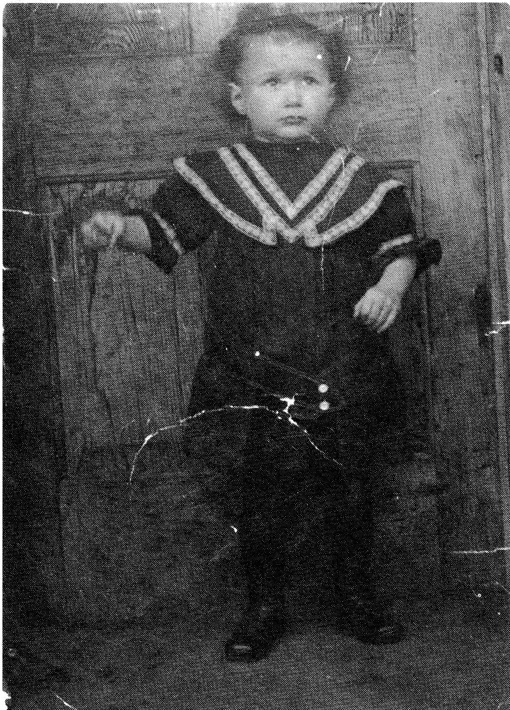

MOISE (SMOKEY) ALAIN
I was born in Delmas, Saskatchewan, on January 28, 1908, the eldest child of the Henri and Alma Alain family. Shortly after my birth we moved to Ruddell, Sask., where we lived with Uncle Alphonse and Aunt Josephine. He was Dad's brother who was married to Mother's sister.

Our home was a small sod shack which had a dirt floor and a couple of curtains which were used for partitions.
Dad and Uncle Alphonse freighted between Battleford and Saskatoon for a few years after which they worked on the grade for the bridge at Battleford before returning to Delmas where Dad built a much bigger house.
Our new home was indeed a much bigger house - in fact, it was a very large house - six bedrooms upstairs and one large one downstairs which was Mother and Dad's. The living room must have been twenty feet by twenty feet and off of it was a parlor which had two big glass doors. On the same floor was another room that was supposed to be an office but all it ever contained was an old rough desk, some flour, harness and junk like that. The kitchen was big but not too large. All of the neighbors had suggested they not build a big kitchen but Dad should not have listened to them as we really lived in our kitchen. We used to do our homework and play cards in there all the time. The parlor was only used when the boys came calling on the girls.
Dad had a half section of land which meant lots of work for all of us. Dad and Uncle Alphonse worked together for a while as they got along very well together. In fact, one never heard a word while they worked. Uncle Alphonse was a hard worker and Dad once said of his brother that Alphonse did twenty loads of hay by himself in one day. One would think he was a big man but he wasn't -- mind you, he was a jolly, easy-going guy. Everyone got along with him. Aunt Josephine could play the accordian to beat the band. I believe she was the only one of the L'Heureux children to play a musical instrument.
I went to school in Delmas where I started at the age of seven and, for a while, did not do well so Mother and Dad sent me to the French College in Gravelbourg for two years. After that things got much easier for me. I won a medal in French during my last year. I know I could have done much better if I had applied myself. It cost $28.00 a month to attend the college - this included everything. My brother, Louis, came to Gravelbourg during my last year. He found school difficult - mind you, it seemed he had his mind on other things as he was always in trouble!
My name is really Moise, named after my maternal grandfather, but I have been known as Smokey most of my life. Uncle Archie (Mother's brother) and I would play tennis and, when I missed the ball, Uncle Archie would teasingly say, "Missed again, eh Moise?" I'd get mad and call him all kinds of names. Later when Archie was at home, he would relate to the whole L'Heureux family how he had really gotten Moise that day: "I really got him smoking today" and, from then on, they called me "Smokey". Tennis is one sport I've enjoyed and, later on, I got to play fairly well.
I used to spend my summer holidays at Granddad L'Heureux's place at least for four or five years. One day Granddad was on his way to Battleford and he asked Louis and me what we'd like from town - a sleigh or candies? Louis said, "I want candies" and so I was left with the sleigh - which lasted a lot longer than Louis' candies!
Granddad L'Heureux liked candies and always had some on hand. Usually they were hid